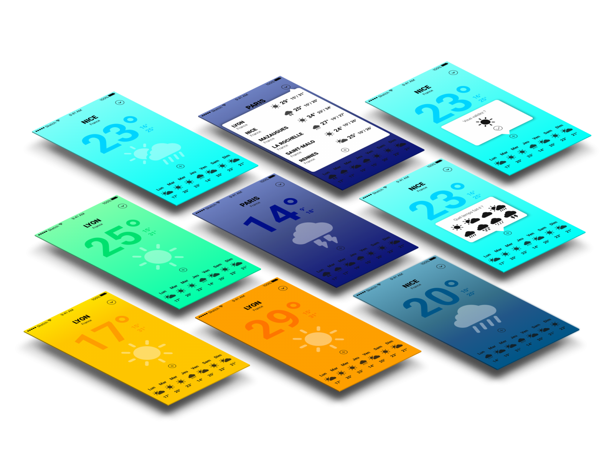

Introduction
Wethere est une application météorologique qui prend en compte deux types de données : les pronostics météorologiques de Météo France et les données envoyées par les utilisateurs via l’application. De plus des nuances d’orange s’installent sur le fond de l’application lorsque l’aube ou le coucher de soleil arrive. Permettant ainsi d’apaiser les yeux de l’utilisateur et de l’habituer à la luminosité ambiante de la journée.
Le plus
Grâce à leur géolocalisation, les utilisateurs peuvent envoyer leur avis sur la météo. Par exemple s’il est indiqué qu’il fait beau par Météo France, alors qu’il fait actuellement nuageux, l’utilisateur a la possibilité d’envoyer cette nouvelle donnée météorologique. Cela permet aux autres utilisateurs qui vont se rendre dans certaines villes de voir le véritable temps qu’il fait et prévoir les tenues ou le parapluie en conséquence.
